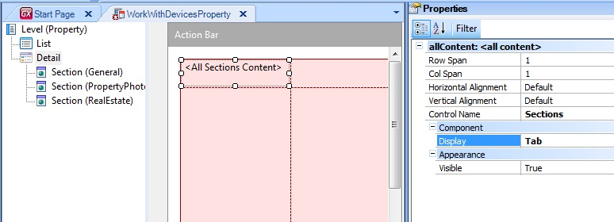

| Inline | Draws all sections in the same view. |
| Link | Draws the sections as single links; click on the links to show the information in a new list. |
This property allows selecting the preferred way of showing the sections related to the Work With for Smart Devices Detail Node.
The above values will be available when using a oneContent:Section.
In the case of a allContent:Section, there will be two more values:
- Platform Default: it will choose the default value of the platform in use.
- Tabs: it will show all sections in Tabs.
For example:

This property applies only at design-time.
| Backlinks | |
| Event Triggering Order in Panels | |
| Refresh command in Panels | Work With for Smart Devices Pattern instance for Multi-level Transactions |